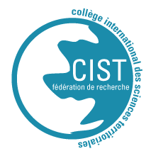

SPA1 - Semis de Points
Initiation à l’analyse spatiale : résumés élémentaires et formes de semis de points
Informations pratiques
Ce module s’adresse à des étudiants et étudiantes en licence et master et comprend un cours magistral ainsi que des travaux dirigés avec exercices (sous R). Il est composé d’un cours (2h) et d’un TD construit autour de deux exercices qui, selon les niveaux, peuvent être réalisés en 2h ou 4h.
Il peut constituer un des premiers modules d’initiation à l’analyse spatiale (limitée à l’exercice 1 dans ce cas) : en appliquant les méthodes déjà connues de résumés statistiques univariés (valeurs centrales, paramètres de dispersion) aux coordonnées spatiales X et Y d’un ensemble de lieux, on peut poser les premières bases de la description de la forme d’une distribution spatiale. On l’articulera alors aux notions de centralité, de concentration et de dispersion de phénomènes ponctuels de natures variées (des villes, des équipements, des arbres…).
Prérequis
Méthodologiques : initiation aux statistiques univariées (EXP1), initiation sur l’information géographique (TYP3) (localisation, systèmes de coordonnées), définitions et mesures de distances (SPA3).
Techniques : maîtrise de l’outil informatique, sous R, manipulations et résumés élémentaires de données au format dataframe (r base, dplyr), manipulations élémentaires de données au format sf, cartographie à l’aide de la bibliothèque mapsf.
Les exercices sont proposés sous R mais dans le diaporama du cours, des indications sont données sur les outils permettant d’effectuer des opérations équivalentes dans QGIS, lorsqu’ils existent. Un tutoriel de présentation de ces outils dans QGIS est également disponible ici.
Les notions abordées dans ce modules sont utiles pour les niveaux suivants : autocorrélation spatiale (SPA4), et accessibilité et distance (SPA2).
Résumé
Le cours est constitué de quatre parties :
- Définition d’un semis de points
- Les résumés élémentaires d’un semis de points
- Analyse globale de la forme d’un semis de points : exemple de la méthode du plus proche voisin
- Analyse locale de la forme d’un semis de points : les lissages par noyaux (Kernel Estimation Density)
Le TD est construit autour de deux exercices :
Le premier exercice porte sur les résumés de semis de points et s’appuie sur la base Africapolis (2020). Il propose de suivre l’évolution du semis de villes de plusieurs pays africains depuis 1950. L’exemple est déroulé pour le Bénin, les données de six autres pays étant disponibles pour pouvoir reproduire la démarche dans d’autres contextes nationaux.
Le deuxième exercice est une application des méthodes d’analyse de la forme (concentration/dispersion) d’un semis de points à partir d’approches globale (méthode des distances au plus proche voisin) et locale (cartographie de noyaux de densité via la méthode des Kernels). La base de données mobilisée décrit les stations services dans la municipalité de Bamako (enquête S. Traoré, 2020).
Support de cours
Un diaporama du cours commenté ainsi qu’un tutoriel QGIS sont disponibles à la consultation et au téléchargement.
Support de TD
Les exercices téléchargeables sont à réaliser sous R. Chaque dossier contient les données et autres sources nécéssaires à la réalisation de l’exercice, un fichier .html reprenant l’énoncé de l’exercice accompagné du .qmd permettant sa compilation (modifiable sous R) et d’un script dans lequel réaliser les exercices.
Données
- Partie 1 : Base Africapolis et GADM
- Partie 2 : stations services dans la municipalité de Bamako (enquête S. Traoré, 2020)
Références
CIST·EE2023 CIST·EE2023 SPA2 - Distance et accessibilité MOD2 - Modèle Logit École d’été Équipe Tous les modules A. Collecte des données TYP1 - Données d’enquête TYP2 - Données de recensement TYP3 - L’information Géographique B. Statistique exploratoire EXP1 - Statistique univariée EXP2 - Statistique bivariée EXP3 - Statistique multivariée C. Cartographie CAR1 - Cartographie Thématique CAR2 - Cartographie dynamique D. Modèles de régression MOD1 - Régression multiple MOD2 - Modèle Logit E. Analyse spatiale SPA1 - Semis de Points SPA2 - Distance et accessibilité SPA3 - Interaction Spatiale et Flux F. Outils OUT1 - TIG’R OUT2 - Initiation à QGIS École d’été /ecole_thematique.html Equipe /equipe.html Modules /modules.html Mentions légales /apropos.html Contacts /contact.html https://github.com/EE-CIST/website ET CIST·2023 -  - CIST · INED · IRD · LaReSPD · UPC E. Analyse spatiale SPA1 - Semis de Points
- CIST · INED · IRD · LaReSPD · UPC E. Analyse spatiale SPA1 - Semis de Points

CIST·EE2023 - SPA1 - Semis de Points CIST·EE2023 - SPA1 - Semis de Points CIST·EE2023 - SPA1 - Semis de Points CIST·EE2023 Initiation à l’analyse spatiale : résumés élémentaires et formes de semis de points Initiation à l’analyse spatiale : résumés élémentaires et formes de semis de points